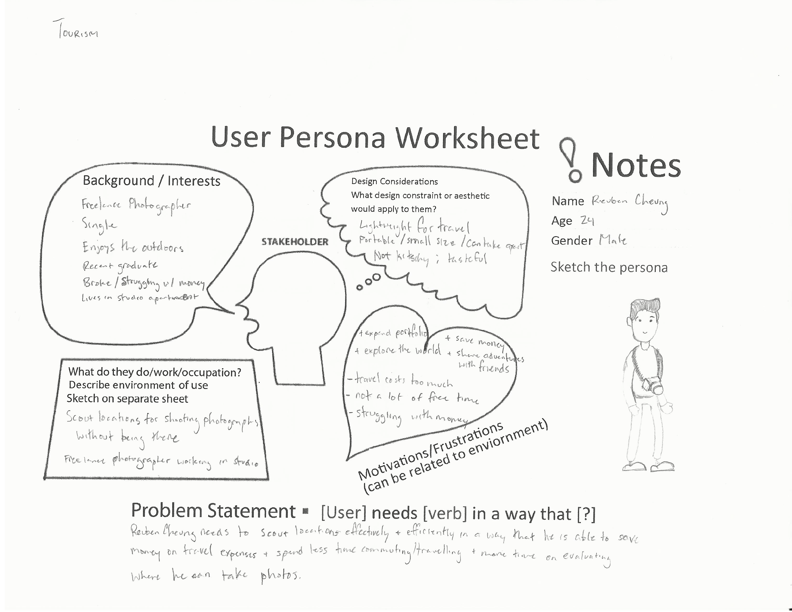

photogra–VR
A product that allows photographers to scout locations on the fly.

Roles:
Ideation
Prototyping
Product Design
Illustration
Team:
Farouk Nnaji
Lana Kobayashi
Marcus Blackstock
Timothy Chow
Summary
photogra-VR is a virtual reality headset that allows travelling photographers to simulate environments for shooting locations. By using unconventional materials such as wood and paper, photograph-VR is able to be lightweight for travel.
Context
This project was an introduction to the world of product design. As we were given the opportunity to work with unique materials of oak wood and washi paper for a virtual reality headset, we decided to frame our open brief around these materials’ strengths: versatility and lightness. We began to research deeper into these materials where we could bring out their respective physical and aesthetic qualities. We then chose to target our headset towards photographers.
Persona
From our research, we developed our persona:
Process
Before I started to sketch out iterations, I looked more into how bulky electronic devices utilized portability for travel. I drew two insights from this research:
-
01
Portability can be achieved through modularity
-
02
Modular design affords different types of interactions
With these insights, I took them into consideration towards my sketches to try to think of ways to achieve portability with a bulky headset. Our team then collectively decided to combine my research of modularity, Lana’s research of collapsibility, and Marcus’ research of photographer affordances.
While we did have final sketches of the headset, we still were not sure about how to approach applying the required interactions for the headset. Because of this, I created a sketch model out of styrene to prototype these interactions.
Prototyping + Build
After some minor changes to the sketch model, a large issue that came up was the design of the folded washi paper. Because of the way it was unnaturally shaped, using three glued pieces of folded paper restricted the headset from fully opening. After trial and error, I was able to create the same shape using a single sheet of paper, allowing the headset to be functional.
Thinking spatially and working with ergonomic dimensions was my primary focus and most challenging task as there were many pieces for this headset. With the initial planning and repeated processes of sketching to explore, we were able to fulfill our goals that we had framed in the beginning.
Final Thoughts
Stepping back to think about the processes I took for this project, I realized that it was really important to look into the finer details of objects and how they work. I also experienced firsthand how important sketching is as a tool to fully communicate my ideas to my team.